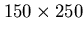

Next: Modifying Geometric Objects
Up: No Title
Previous: Image Processing
This is the detection of features in images (such as corners, edges, ...).
Here we consider examples of local feature detection.
On the Segmentation menu, try the following menu items:
- 1.
- Corner Detection
Select the ``Harris Corner Detector'' on the Segmentation menu,
and set ``Maximum corner count'' = 50 -- this restricts display to
only the 50 most salient corners. Select OK to apply the corner detector.
Read in the basement00 image, and select a ROI which includes
the front left column (e.g. top left around (50, 160), size about

). Apply the corner detector.
- 2.
- Edge Detection
Select ``Canny: Oxford'' on the Segmentation menu.
Apply the
operator -- this includes both edge detection (convolving with the
derivative of a Gaussian, and Non Maximum Suppression) and edge
linking using hysteresis. The edges are displayed in green. Note that
the linked edges are selected (shown in yellow) as the cursor moves close
to them. Now fit lines to the edges by selecting ``Detect lines: Oxford''.
Karen McGaul
2000-10-27